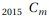
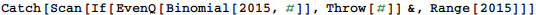
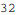
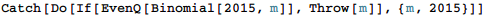
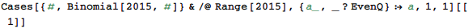

東京大学 2015年 理科 第5問
問題
mを2015以下の正の整数とする。が偶数となる最小のmを求めよ。
解答
m=1から探索して求める。
In[80]:=

Out[80]=

補足・感想
計算機なら楽勝。解答では関数型パラダイムで書いてみた。
手続き型なら以下。
In[81]:=

Out[81]=
パターンマッチングを使った方法(ただしBinomial[2015, m]をすべて計算するので遅い)
In[97]:=

Out[97]=